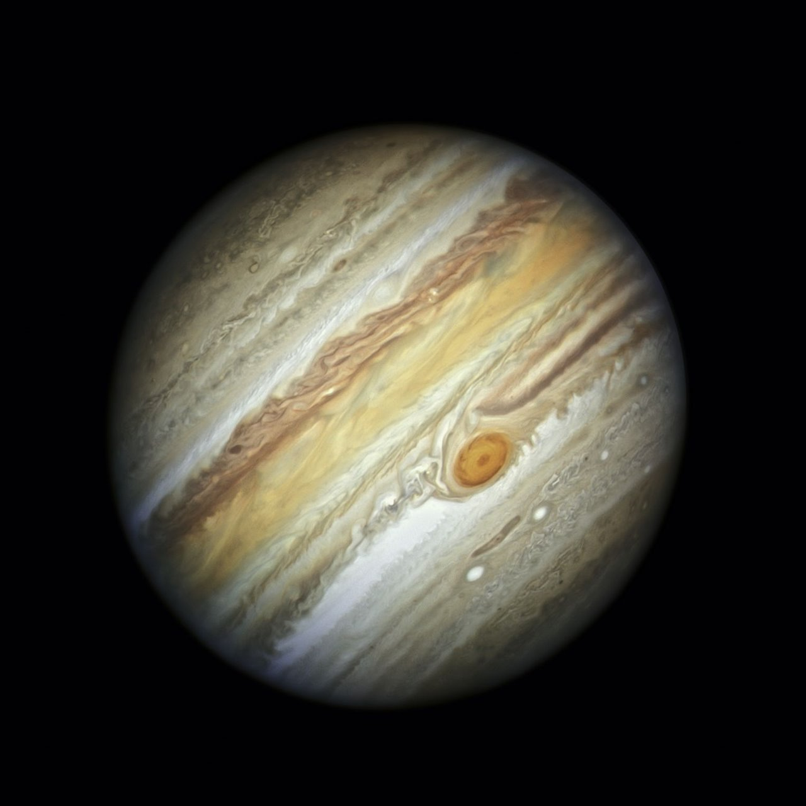

El planeta Júpiter
Imagen
Datos

Distancia desde el Sol:
778.5 millones de km
Radio:
69.911km
Gravedad:
24.79m/s²
Masa:
1898 ⨉ 10²⁷
Superficie:
61.42 miles de millones de km²
Duración del día:
0d 9h 56m